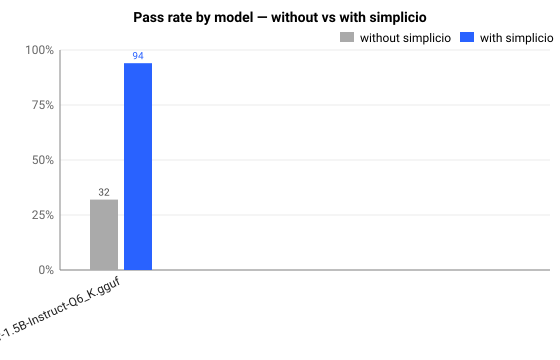
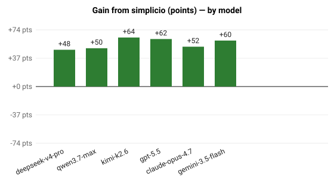
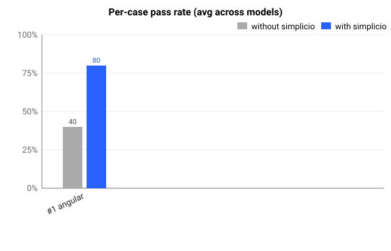
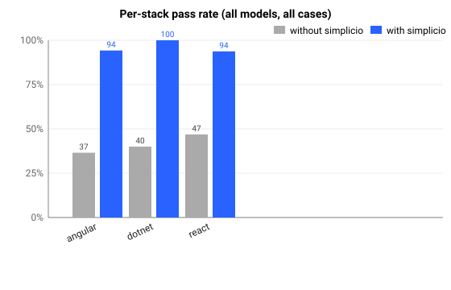

Date: 2026-05-26
Models: qwen/qwen-2.5-7b-instruct,
meta-llama/llama-3.1-8b-instruct,
google/gemma-3-12b-it
Cases: 10 across stacks: angular,
dotnet, react
Base: https://openrouter.ai/api/v1
Each check is a deterministic regex against the model output (target-file mention, DIFF block, TEST block, contract-state words). Same model on both sides — only the prompt structure changes. The without run is the raw one-line objetivo; the with run wraps the same objetivo in simplicio’s 6-layer contract.


| Model | Cases | Without | With | Delta (pts) | Relative gain |
|---|---|---|---|---|---|
qwen/qwen-2.5-7b-instruct |
10 | 20/52 (38%) | 42/52 (80%) | +42 | +110% |
meta-llama/llama-3.1-8b-instruct |
10 | 18/52 (34%) | 51/52 (98%) | +64 | +183% |
google/gemma-3-12b-it |
10 | 20/52 (38%) | 49/52 (94%) | +56 | +145% |

| # | Stack | Task | Without | With | Δ |
|---|---|---|---|---|---|
| 1 | angular |
Hide the Delete button when the current user is not an admin | 40% | 73% | +33 |
| 2 | angular |
Disable the email field unless the profile role is editor. | 40% | 80% | +40 |
| 3 | angular |
Only show the audit log link for users with role ‘auditor’. | 27% | 100% | +73 |
| 4 | angular |
Show ‘Approve’ button only when the order status is ’pending | 39% | 100% | +61 |
| 5 | react |
Render the export menu item only for users in the ’analytics | 33% | 100% | +67 |
| 6 | react |
Disable the ‘Save Draft’ button while the form is invalid OR | 50% | 100% | +50 |
| 7 | react |
Show a ‘No results’ empty state when the search returns zero | 27% | 100% | +73 |
| 8 | dotnet |
Require the ‘CanApprove’ policy on the Approve endpoint of t | 47% | 80% | +33 |
| 9 | dotnet |
Restrict the GET /reports endpoint so only users in the Mana | 27% | 73% | +47 |
| 10 | angular |
Show a warning banner if the user has unsaved changes and tr | 40% | 100% | +60 |

| Stack | Without | With | Δ |
|---|---|---|---|
angular |
37% | 91% | +54 |
dotnet |
37% | 77% | +40 |
react |
38% | 100% | +62 |
Beyond pass-rate, the same outputs are scored on structural quality. Each row = % of runs (cases × models) where the signal is present.
| Signal | Without simplicio | With simplicio |
|---|---|---|
| DIFF block present | 0% (0/30) | 100% (30/30) |
| TEST block present | 86% (26/30) | 93% (28/30) |
| target file mentioned | 3% (1/30) | 96% (29/30) |
| avg criteria-keywords hit / run | 9.4 | 9.5 |
| avg output length (chars) | 3044 | 2106 |
OPENROUTER_API_KEY=… \
BENCH_MODELS="qwen/qwen-2.5-7b-instruct,meta-llama/llama-3.1-8b-instruct,google/gemma-3-12b-it" \
python3 bench/run_offline.pyRaw model outputs are saved under
.simplicio/bench_runs/<model>/case_NN/{sem,com}.txt
so you can audit what the LLM actually produced on each side. Charts are
SVG under bench/charts/; raw aggregated data under
bench/results.json.